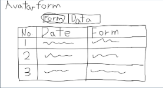
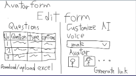
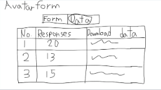
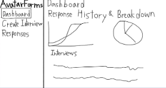
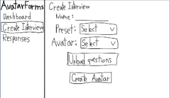
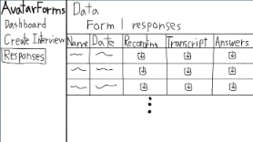
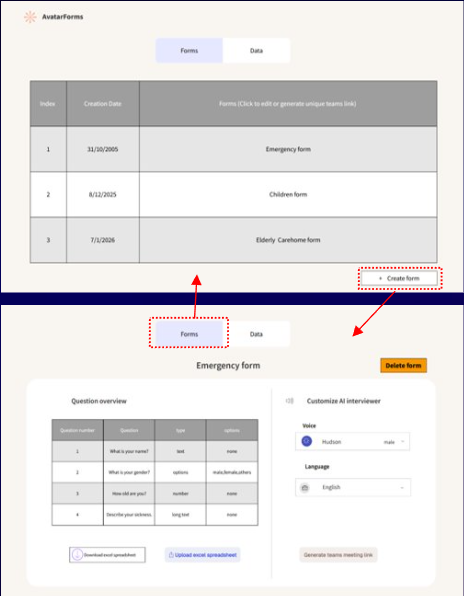
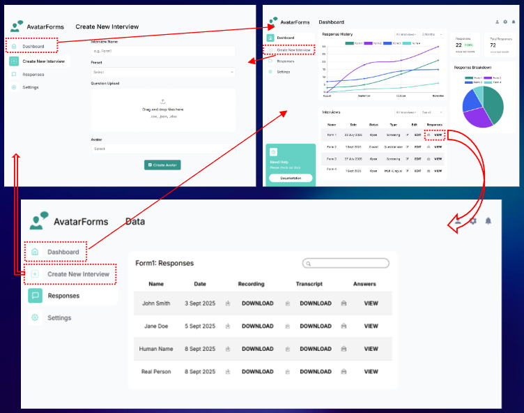
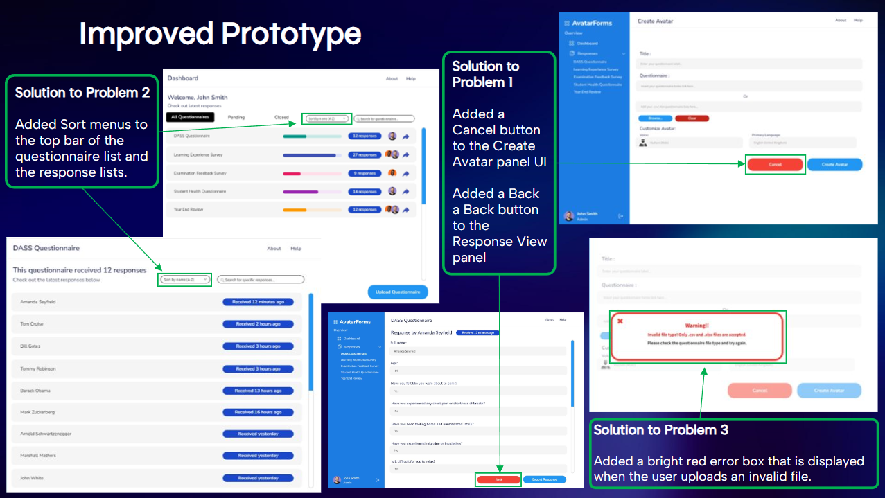

Our design approach aligns with established HCI theory rather than purely aesthetic preference. Based on our evaluation of the final interface, the system satisfies several widely cited principles in usability and interaction design.
| Principle | Observed Alignment in AvatarForms | Evaluation |
|---|---|---|
| Visibility of system status (Nielsen) | Questionnaire and response states are visible in list views, with immediate feedback after sorting and file-validation events. | Strong |
| User control and freedom (Nielsen) | The addition of explicit Back and Cancel actions in high-commitment flows reduces interaction lock-in and supports recovery. | Strong after refinement |
| Consistency and standards (Nielsen; Shneiderman) | Reusable panel structure, stable sidebar navigation, and repeated control placement reduce relearning cost across screens. | Strong |
| Error prevention (Nielsen) | Invalid upload handling now provides immediate, high-contrast, explanatory feedback before downstream failure occurs. | Moderate to strong |
| Gestalt law of proximity | Related controls and data are grouped into discrete cards, improving scanability and reducing semantic ambiguity. | Strong |
| Hick's Law | Core tasks are prioritised while advanced features are deferred, reducing decision complexity for first-time users. | Moderate to strong |
| Fitts's Law | Primary actions are positioned in predictable, visually distinct locations, reducing movement and target-acquisition effort. | Moderate |
Collectively, these alignments indicate that the final interface supports learnability, operational efficiency, and safer interaction. The principal remaining opportunity is to further optimise target sizing and action prominence on dense screens for improved motor efficiency.
To make progression explicit, the sketches are grouped as numbered design iterations for each concept family. Each sequence demonstrates how layout priorities evolved from initial framing to more structured task flows.






The UX strategy prioritised clarity, predictability, and low interaction cost for common form-management tasks. Rather than maximising feature density, the interface was structured to support rapid completion of core actions: creating questionnaires, inspecting response volumes, and opening individual response views with minimal navigation overhead.
Across design iterations, feedback consistently reinforced the importance of explicit navigation affordances, clear ordering controls, and actionable validation messaging. This led to a user experience model that balances ease of first-time use with sufficient depth for repeated operational use.
- Primary strength: reduced cognitive load through stable layout and clear task grouping.
- Primary strength: consistent control placement across dashboard, responses, and avatar flows.
- Remaining consideration: continue improving prominence of secondary controls in dense screens.
The prototyping progression documents the transition from initial structural exploration to a more complete interaction model. Each stage incrementally refines hierarchy, control prominence, and flow predictability.
Prototype 1: initial structural model with emphasis on core task discoverability.

Prototype 2: refined architecture balancing richer functionality with navigational clarity.

Prototype 3: final pre-implementation prototype consolidating layout, controls, and interaction flow.

A heuristic evaluation approach was selected because it provides rapid, cost-effective usability diagnosis without dependence on external participant recruitment. The inspection identified three medium-to-high priority issues associated with control visibility, ordering flexibility, and error prevention.
Following this evaluation, the identified fixes were implemented in a revised design iteration, Prototype 3, which served as our final prototype before the final UI design was consolidated.
| Problem | Heuristic Breach | Severity (0-4) | Implemented Response |
|---|---|---|---|
| Lack of explicit return paths in creation and response-detail views. | User control and freedom; consistency and standards. | 2 | Added visible Cancel and Back controls within relevant panels. |
| Questionnaire and response entries had non-customisable ordering. | User control and freedom. | 3 | Introduced sort menus for questionnaire and response lists. |
| Invalid file uploads lacked actionable feedback messaging. | Error prevention. | 3 | Added high-contrast inline error notice with explicit remediation guidance. |
Severity scale used: 0 (not a problem), 1 (cosmetic), 2 (minor), 3 (major), 4 (catastrophic).
In summary, the heuristic findings directly informed Prototype 3, ensuring that the final prototype incorporated corrective changes prior to implementation.
The final interface integrates the outcomes of sketch comparison, prototype iteration, and heuristic inspection. The dashboard now emphasises operational overview and rapid access to key actions, while the avatar page foregrounds a clear, low-friction creation workflow that supports novice and returning users alike.

- J. Nielsen, "10 Usability Heuristics for User Interface Design," Nielsen Norman Group, 30 Jan. 2024. Accessed: 02 Nov. 2025. [Online]. Available: https://www.nngroup.com/articles/ten-usability-heuristics/
- C. Evans, "COMP0016-07 Evaluation Part 2" (video lecture), Moodle. [Online].
- B. Shneiderman, C. Plaisant, M. Cohen, S. Jacobs, N. Elmqvist and N. Diakopoulos, Designing the User Interface: Strategies for Effective Human-Computer Interaction, 6th ed. Boston, MA, USA: Pearson, 2016.
- D. Norman, The Design of Everyday Things: Revised and Expanded Edition. New York, NY, USA: Basic Books, 2013.
- S. K. Card, T. P. Moran and A. Newell, The Psychology of Human-Computer Interaction. Hillsdale, NJ, USA: Lawrence Erlbaum Associates, 1983.
- W. E. Hick, "On the rate of gain of information," Quarterly Journal of Experimental Psychology, vol. 4, no. 1, pp. 11-26, 1952.
- P. M. Fitts, "The information capacity of the human motor system in controlling the amplitude of movement," Journal of Experimental Psychology, vol. 47, no. 6, pp. 381-391, 1954.